6.11 19:39 去程
前言
在写这一系列的时候已经开始工作一段时间了😭~虽然更新的时间有些晚，但我还是更愿意多花点时间让排版看起来更好一些！趁下班有时间慢慢写吧。
临近研究生毕业的时候逛完了中国的四大古都！这是第一站——西安！
导览
学习一下桥边红药的博客在文章开头处做一个时间轴导航栏！
正文
6.11
19:39 去程😎
导师说文学院的老师会带学生来实验室交流，希望我们《尽可能》都在实验室，不管了！
{kind=link}
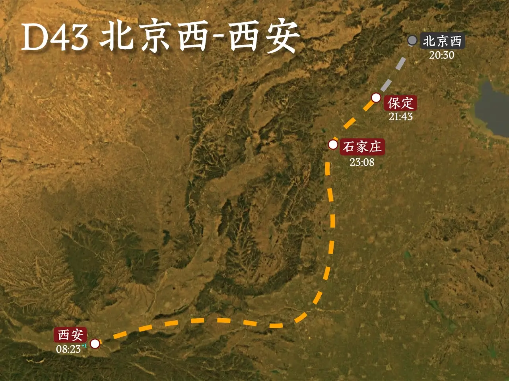
{% hideToggle 地图绘制笔记 %}
注意
为了绘制出更为精确的地图示意图，本次博客引入了开源地理信息系统——QGIS！具体而言：
-
先在 QGIS 中使用 Google 的 XYZ Tiles，之后再在 Google Maps 中查询到关键点的坐标（这边选用了北京西站、保定站、石家庄站、邯郸站、郑州站、洛阳站、西安站）。
使用如下代码将经纬度坐标转为 3857 坐标：
python import math def lonlat_to_3857(lon, lat): x = lon * 20037508.34 / 180 y = math.log(math.tan((90 + lat) * math.pi / 360)) / (math.pi / 180) y = y * 20037508.34 / 180 return x, y coord_str = "39.893261, 116.321297" # 解析字符串，拆成 lat, lon lat_str, lon_str = coord_str.split(",") lat = float(lat_str.strip()) lon = float(lon_str.strip()) x, y = lonlat_to_3857(lon, lat) print(f"输入字符串: '{coord_str}'") print(f"转换成 EPSG:3857 坐标: X={x:.2f}, Y={y:.2f}") -
导出
.pdf，使用 Ai 设置点的样式，连接出铁路图。 -
导出
.psd，在 Ps 上做进一步美化。 -
使用 pixi.js 写一个交互式的地图组件太麻烦了下次再说。
{% endhideToggle %}
从保定到西安的高铁至少需要￥460+！太贵了我不能接受。觉得躺卧铺是一个不错的选择！不仅省一晚上住宿钱还更便宜。中铺（买不到下铺😭）D43 21:52 保定-08:23+1 西安，￥286。睡一晚上就梦回长安了！
20:48 保定站
{kind=link}
知道保定的公交车又慢又少🤧，所以提前了好一阵就出发了。历经一小时抵达保定站！
21:49 范阳起兵！
{kind=link}
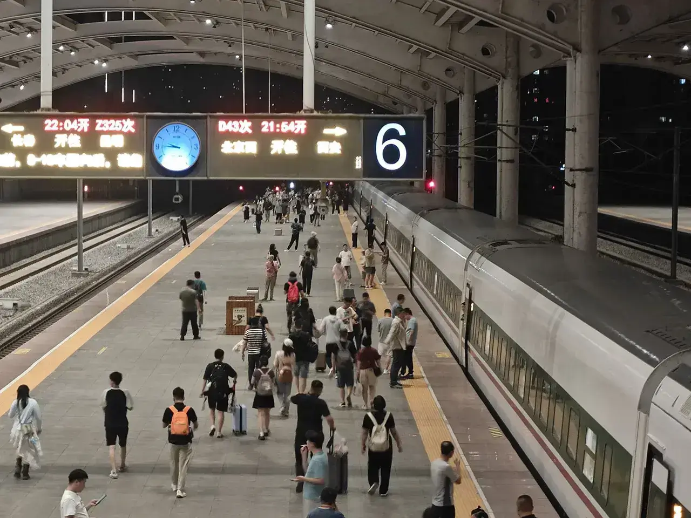
上车咯！外面是动车的样子，但是里面还是跟之前的绿皮硬卧一个配置。睡得迷迷糊糊半睡不醒的。
这部车过石家庄后就直达西安了，不知道是从山西走还是从河南走？大半夜爬起来看了下，还是从河南过去的。
喃们保定真是太有实力了！这部车停靠保定也不停郑州😇！
6.12
08:16 到站了！
{kind=link}
{kind=link}
热热热！
在这个时候跑出来玩，一是觉得马上要工作了后面很难有再出来旅游的机会，二是最后一个学期宿舍不想交空调使用费，就跑出来睡空调房。然而不幸的是，走的时候没注意看天气，陕西这时荣登全国气温榜首之位😵！
08:31 地铁 4 号线
{kind=link}
{kind=link}
挤挤挤！
西安站-4 号线-大雁塔站前往民宿！￥3。以为大雁塔是西安的著名景点应该离市中心很近，其实在城市的边缘了。
我宣布这是我坐过的最挤的一班地铁！感觉比北上广还夸张😵。
09:10 肉夹馍
{kind=link}
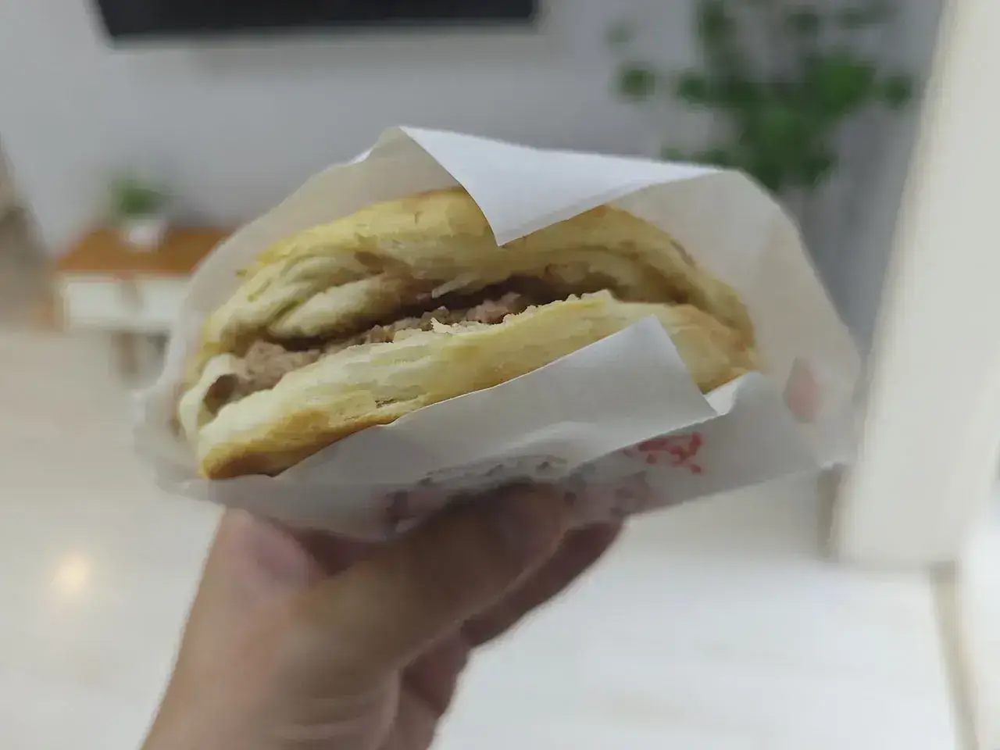
民宿在大雁塔站下，但是离大雁塔还有一小段距离。刚出站的肉夹馍￥15 没买，走了一会儿肉夹馍￥12 没买，再走一会儿￥10 给自己买一个，给热蒙蛋买一个，回民宿了😇。
看着西安的肉夹馍没有青椒？但是没有学校食堂￥6 的肉多，也没有学校食堂的好吃😭！
到民宿看着房子还不错，想着才住两个晚上没时间给兵马俑，于是找房东再续了一天，这样一共是￥438.8 三个晚上。
11:22 盒马鲜生
{kind=link}
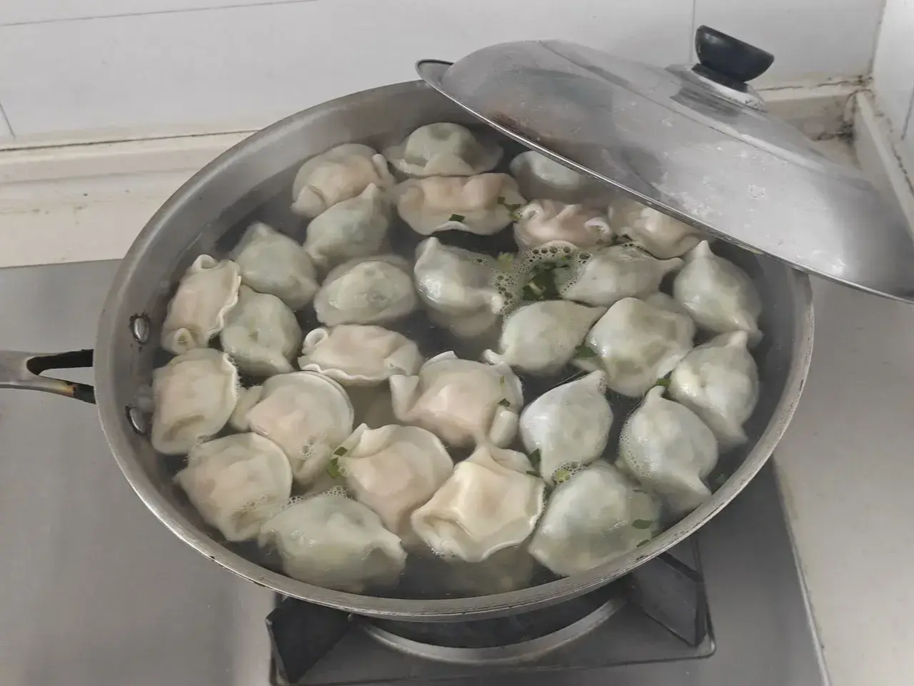
外面热爆爆 + 在车上没睡好，于是上午就民宿躺尸了！
这个民宿虽然感觉有一些陈旧，但是还允许我们做饭，还挺舒适的。盒马很久以前就退出福州了，但是西安还有，于是整点生活物资。
13:45 大雁塔广场🥵
来西安住民宿可不成！于是第一站先去民宿旁边的大雁塔。
{kind=link}
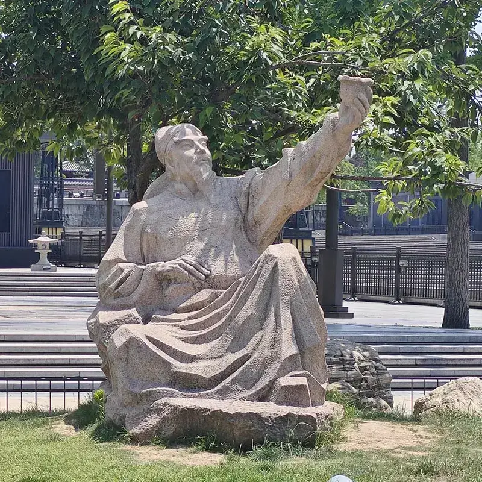
{kind=link}
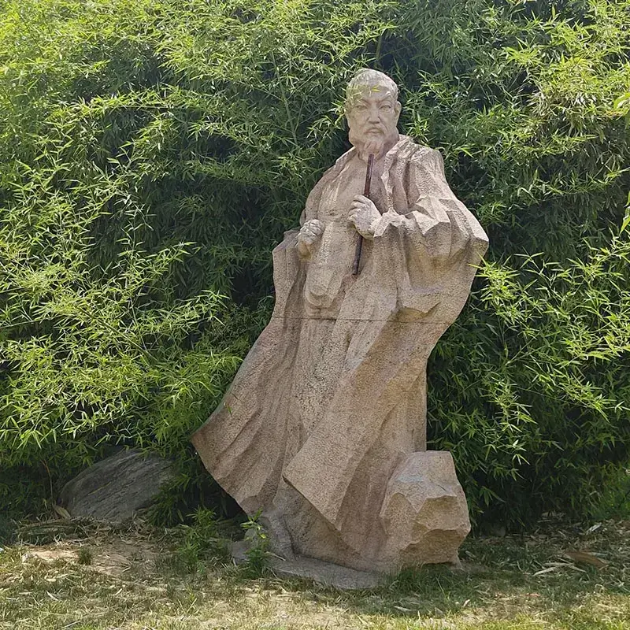
{kind=link}
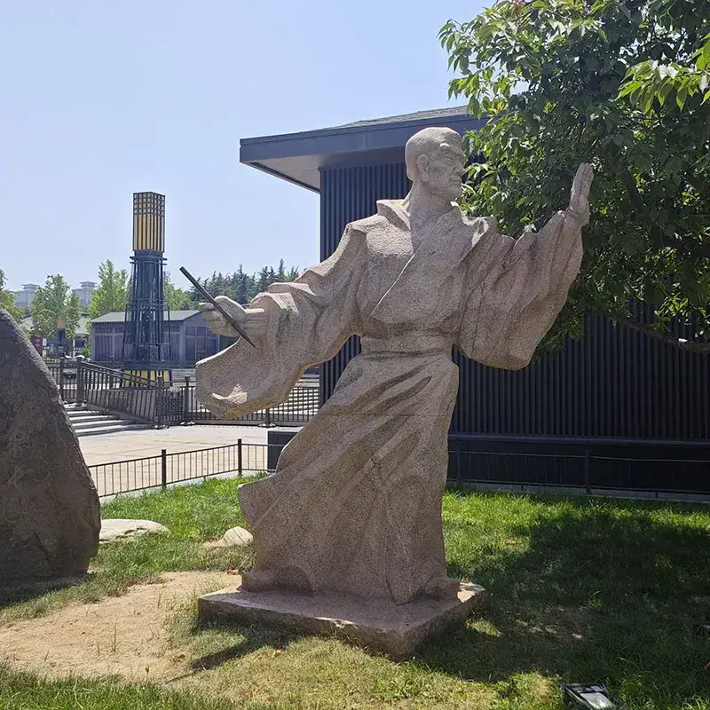
{kind=link}
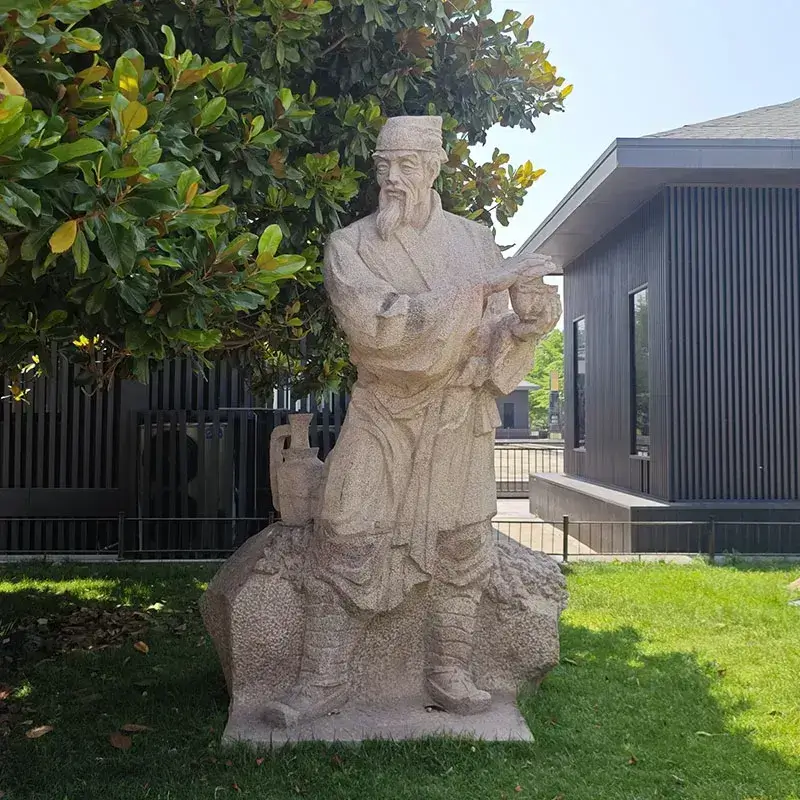
{kind=link}
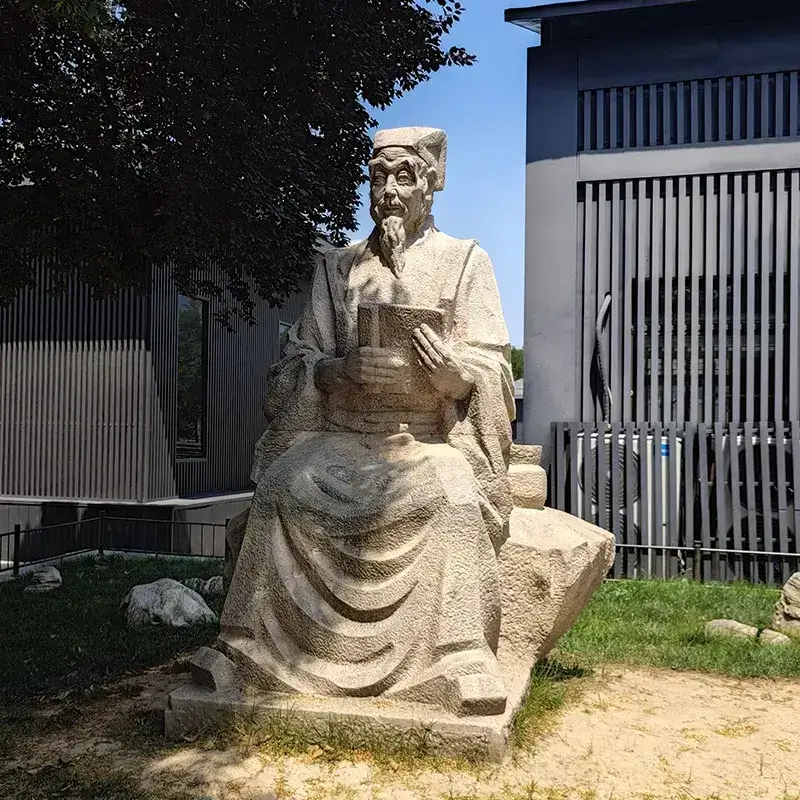
{kind=link}
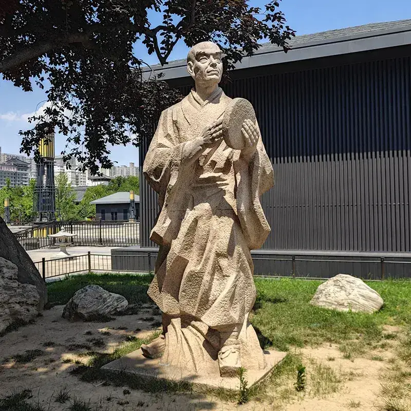
{kind=link}
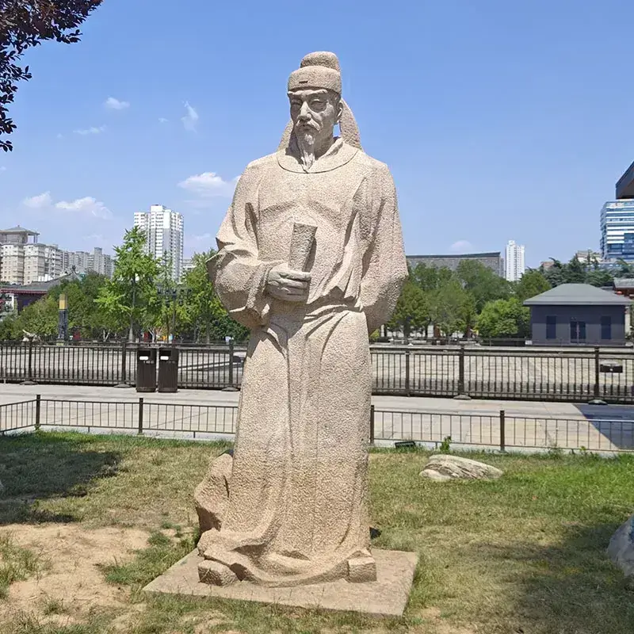
{kind=link}
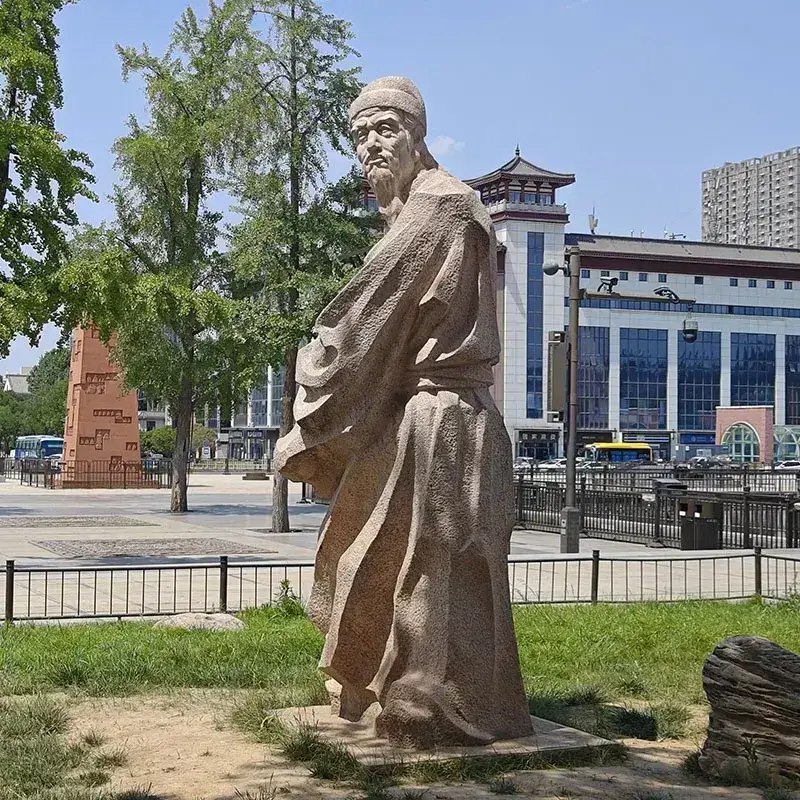
唐朝著名人物
作为中国古代一大强盛封建王朝的国都，西安曾出现过许多著名人物！
13:59 大雁塔
{kind=link}
{kind=link}
这烂怂大雁塔有啥~好看滴呀
大雁塔位于唐长安城晋昌坊的大慈恩寺内，又名“慈恩寺塔”。唐永徽三年（652 年），玄奘为保存由天竺经丝绸之路带回长安的经卷佛像，主持修建了大雁塔，最初五层，武则天长安年间将塔身改至七层，此后一直保持着七层的外观至今。大雁塔通高 64.517 米，底层边长 25.5 米。底层四面皆有石门，底层南门洞两侧镶嵌着唐代书法家褚遂良所书，唐太宗李世民所撰《大唐三藏圣教序》和唐高宗李治所撰《大唐皇帝述三藏圣教序记》两通石碑，具有很高艺术价值，人称“二圣三绝碑”。
其实是个不怎么精致还斜掉的塔，不过却是我见过的最古老的塔了。
{kind=link}
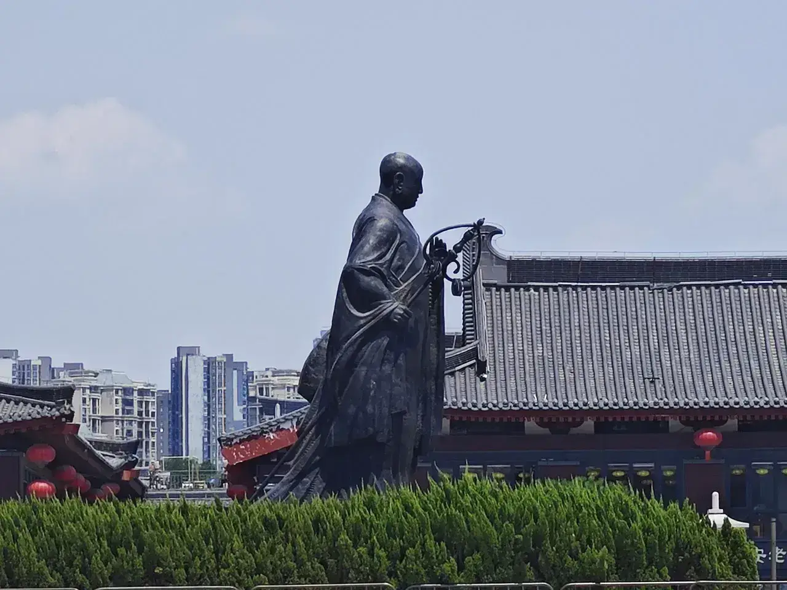
{kind=link}
实在是太热了！再往南走是大唐不夜城，晚上再说，撤！
15:08 永宁门 · 吊桥🥵
{kind=link}
计划是去找个博物馆吹个空调避避暑！就决定是——西安碑林博物馆！大雁塔站-3 号线-小寨站-2 号线-永宁门站，￥2。
按导航是这么走来着！结果下车看到西安城墙的检票处，￥54🤔。问了下安检员说这里去碑林博物馆要多走一会儿，或者也可以进了城墙再出去，反！正！也！才！多！花！五！十！四！块！钱！我觉得好蠢，我不能接受。
跟热蒙蛋商量了下还是觉得就去个西安城墙，不去碑林博物馆了。
{kind=link}
吊桥是护城河上唯一的通道。在古代，吊桥通常是早晨放下，傍晚拉起。战时，吊桥则成了城防的重要一环，一者可以拉起吊桥，御敌于护城河之外；二者可以先放下吊桥，诱敌入城后再拉起吊桥，断敌后路。
15:11 永宁门 · 箭楼
{kind=link}
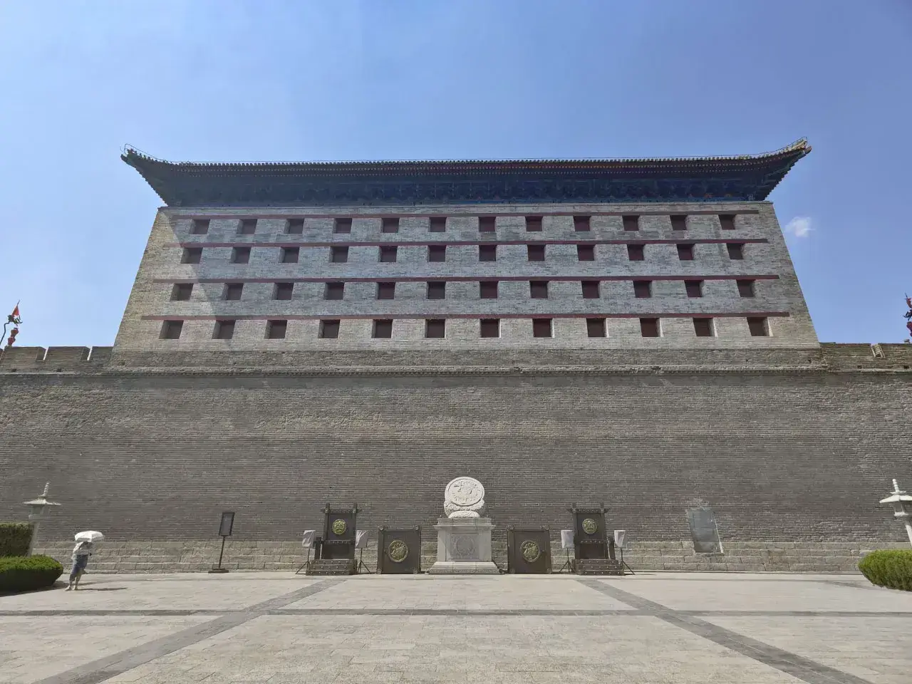
箭楼建于瓮城之上，永宁门箭楼上开了足足 48 个用来料敌射箭的射孔，看到如此规模的射孔就不难想象这座箭楼万箭齐发的威力了。
西安有着国内最完整的明代城墙系统！这个箭楼看着跟北京的可像。
15:21 永宁门 · 马道
{kind=link}
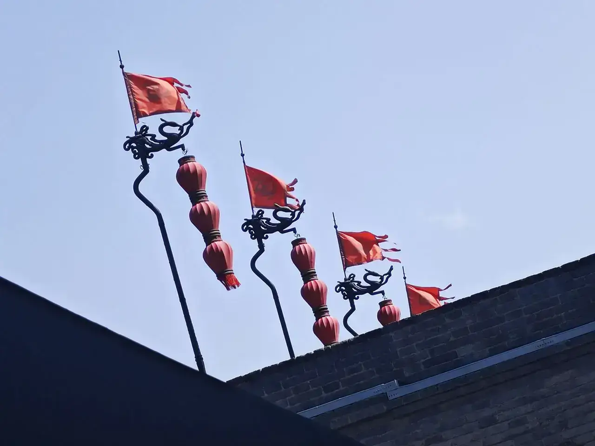
城墙内侧用于登城的坡道，不仅可以方便守城士兵快速登城，还可以方便运送物资的马匹车辆登城。
热蒙蛋说登上城墙的过程中是一个难忘的时刻。
15:25 永宁门 · 敌楼
{kind=link}
{kind=link}
永宁门 · 敌楼
经过瓮城才能到达最后一道城门，也就是永宁门的正门，城门上修筑有气势宏伟的两层三重檐敌楼，这里是战时守城将领坐镇指挥的地方。永宁门敌楼建于明初（1374 年-1378 年），历经修葺保存至今。
15:30 晒太阳
{kind=link}
{kind=link}
{kind=link}
没有遮荫的地方！
我开始后悔选择了西安城墙！大夏天 40°C 人根本不能在上面走多久时间。
看攻略上说上城墙找可以租自行车的地方绕城墙骑一圈是个不错的选择！但是本以为是那种有遮阳棚的旅游自行车，结果是普通的自行车，这骑上去连伞都打不了，我不能接受！
小转一圈，怕中暑，找了个门赶紧下去了。
15:55 朱雀门
{kind=link}
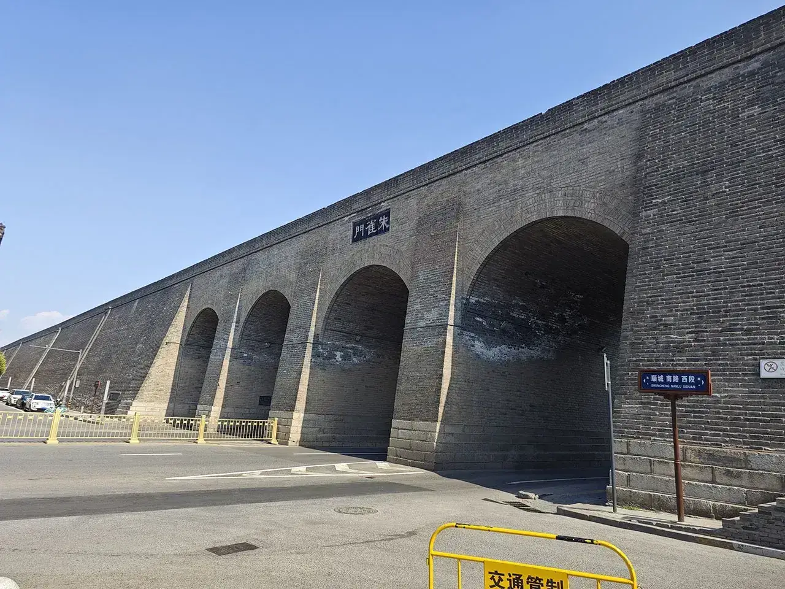
虽然也可以坐地铁，但我觉得这么热的天实在是不能再走了。赶紧爆金币打车回民宿，￥15.76。
16:54 煮面条
{kind=link}
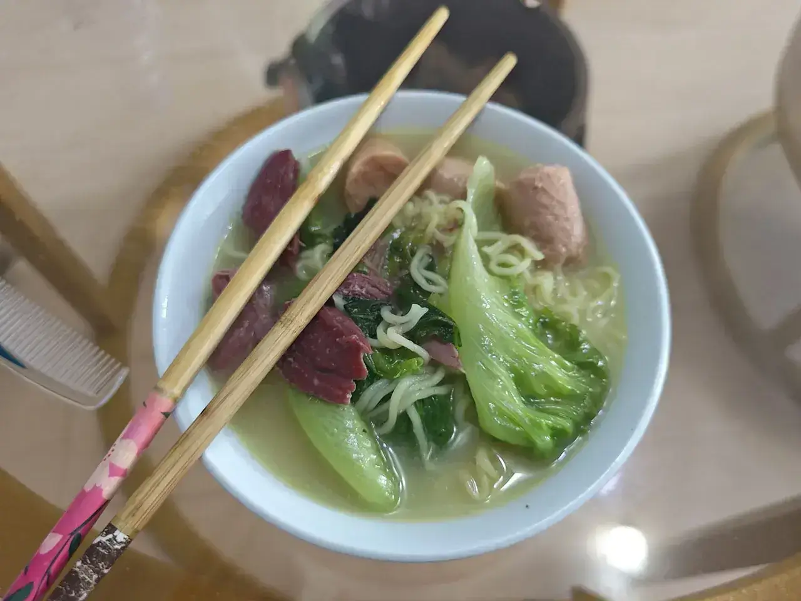
不想出门就直接民宿 DIY 吧！把之前 pro 神送的平遥牛肉拿去煮方便面了，长安城里飘起了晋爷美食的香气~
17:12 一骑红尘妃子笑
{kind=link}
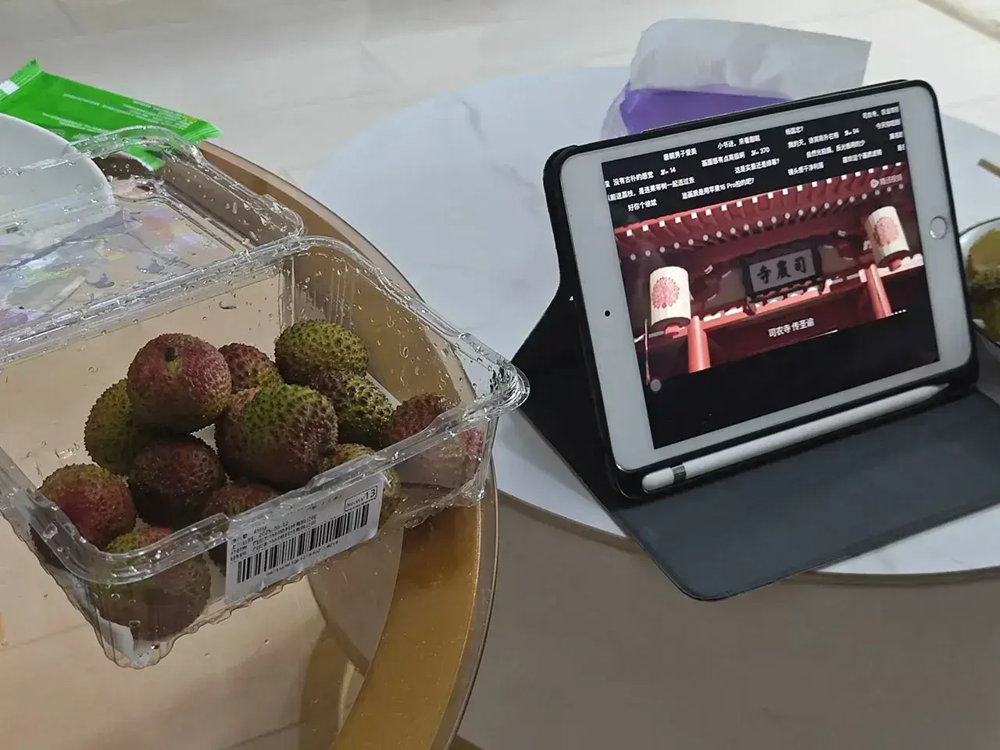
这段时间，电视剧《长安的荔枝》上映了并还挺火的，于是早上点了份长安的荔枝在长安吃荔枝😍。
在一千多年前的长安，老昏君为了吃一只荔枝，逼着手下从岭南快马加鞭赶来。一千多年后的今天，虽然在西安也能很方便地吃上荔枝，但是估计还是受荔枝保质期的限制，荔枝看着还是青青涩涩的。没有家里的好吃！
20:11 钟楼🤩
{kind=link}
就先不去大唐不夜城了！下次一定！据说晚上的西安钟楼是个著名景点，先去看这个！在东边呆久了明显感觉到西边的西安天黑得十分晚。休息到一个差不多的时间，大雁塔站-3 号线-小寨站-钟楼站，￥2。
{kind=link}
仅仅过了 8 分钟就马上天黑了。路口上全是穿汉服拍照的，还有问要不要穿汉服拍照的。
20:27 鼓楼
{kind=link}
“文武盛地”寓意西安是文治武功昌盛之地，既有深厚的文化底蕴，又曾是历代王朝的政治军事中心，象征着国家的昌盛与安定。
参观完钟楼，便是看鼓楼了。我觉得确实没有钟楼更有造型一些😇。
{kind=link}
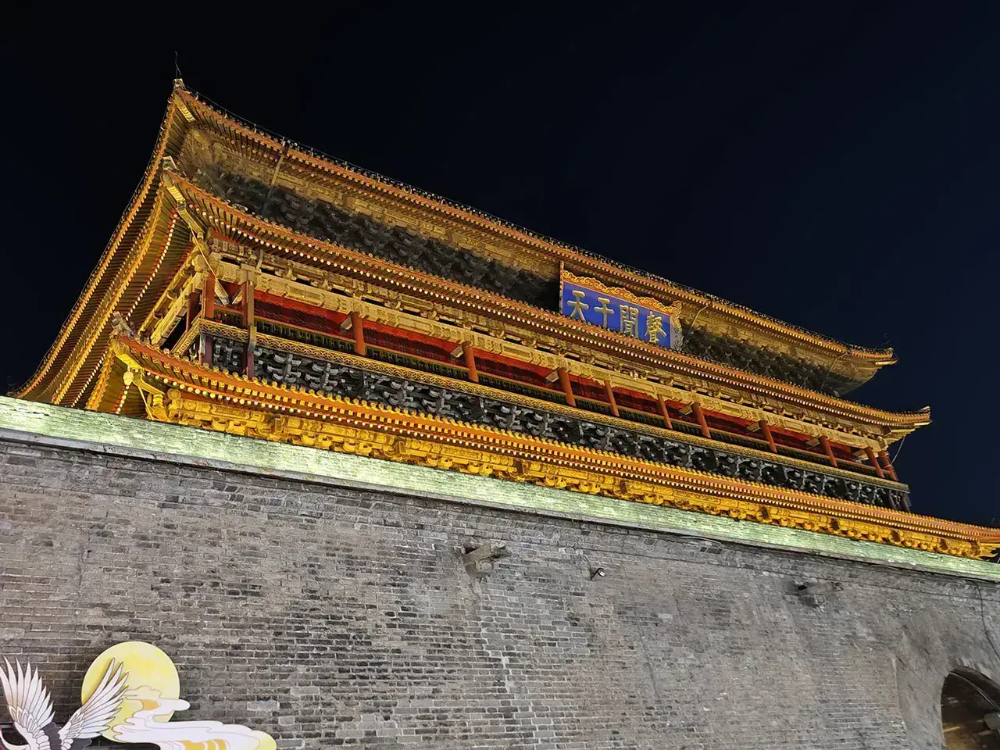
鼓楼作为古代报时、示警的重要建筑，“声闻于天”不仅形象地描绘了鼓楼击鼓时声音洪亮、传得很远，也寓意政令畅达、国家威仪昭彰。正面“文武盛地”与背面“声闻于天”相辅相成，彰显了鼓楼在古城西安历史文化中的重要地位。
20:34 回民街
{kind=link}
鼓楼后面就是回民街了，各种卖网红小吃的地方。
20:43 西羊市
{kind=link}
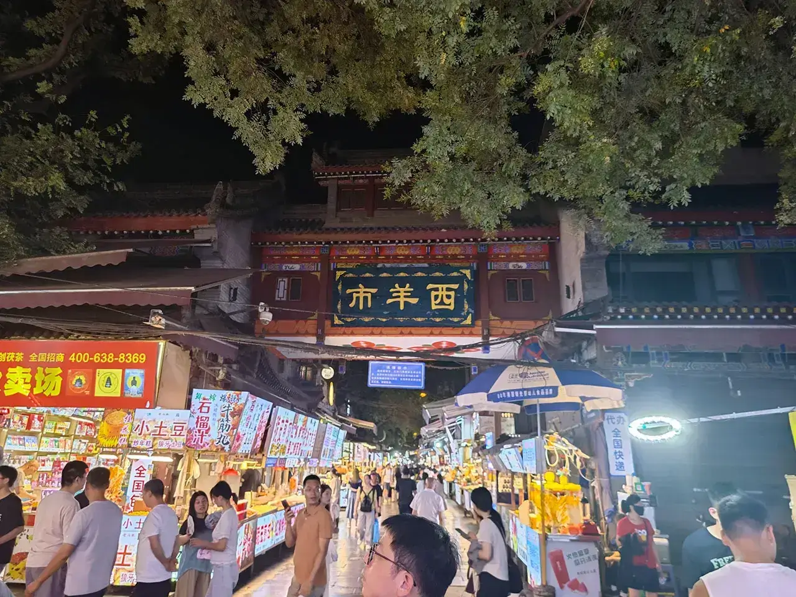
在成为中国最久时间首都的西安，其实也挺有少数民族风味的。买了盒甑糕，￥10。
热蒙蛋买了一瓶酸奶，￥12。但是后来又觉得该买两瓶，结果旁边的￥10。卖货的说不是一个牌子罢了。
参照 pro 神的攻略，他还走到了月亮桥，我看了下太远了，不走回去了。桥梓口站-6 号线-大差市站-4 号线-大雁塔站，￥3。
22:15 夜宵时间！
{kind=link}
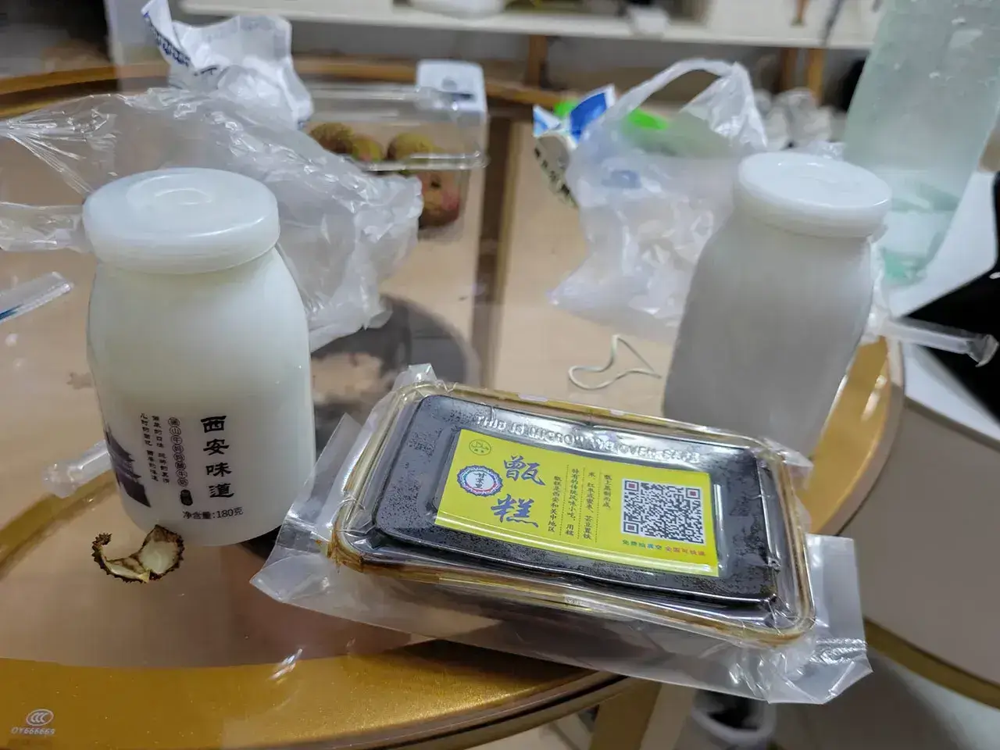
把在回民街那段买的东西吃了，睡！
6.13
07:24 盛世长安
{kind=link}
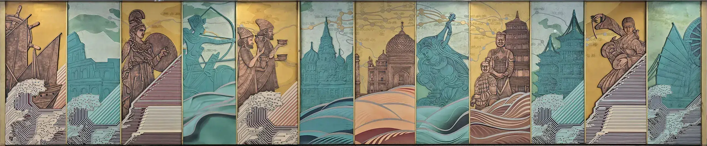
BB 知道了我不在学校偷跑西安了！于是说到西安得去见一下亲戚。把热蒙蛋扔民宿里睡觉自己走了。大雁塔站-3 号线-辛家庙站，￥4。走神了地铁坐反了😭！
拍一张大雁塔地铁站的浮雕！盛世大唐，包罗万象！
不过唐朝人应该还不知道兵马俑的存在……
08:11 亲戚家
09:32 大明宫🥵
{kind=link}
热蒙蛋还没有起床，可以再偷玩一个地方！就决定是——大明宫遗址公园！本来想去长安著名的玄武门，但是看着挺近，地铁却不直达（后面才知道这也不是玄武门之变的那个玄武门），于是改为前往大明宫南门——丹凤门。辛家庙站-3 号线-通化门-1 号线-五路口站-4 号线-西安站，￥3。真是绕死了。
09:42 进门！
{kind=link}
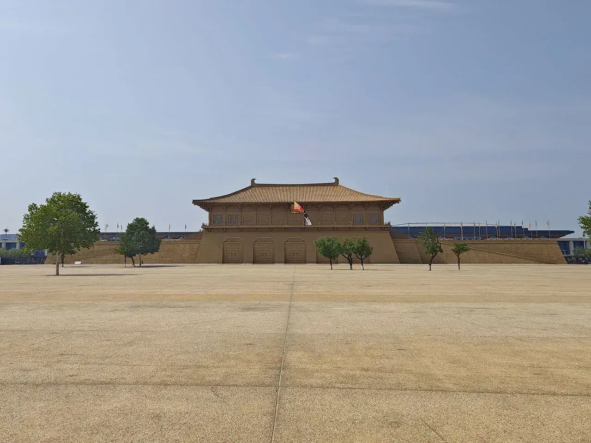
进了丹凤门有一个大广场，前面有个老同志在放一种很低的风筝，不知道叫啥玩意。脑海里浮现出风筝线割死人的画面，太可怕了😱！赶紧跑开了。
09:43 含元殿
{kind=link}
{kind=link}
千官望长安，万国拜含元
节物风光不相待，桑田碧海须臾改。
昔时金阶白玉堂，即今惟见青松在（西安好像也没啥树😵，晒死了）。
后面进入大明宫￥60，好贵啊！来都来了，掏了。
09:54 水沟与土堆
{kind=link}
{kind=link}
伤心大唐经行处，宫阙万间都做了土~
还留有人为处理过的痕迹。
10:04 大明宫遗址博物馆
终于找到了博物馆！进去吹空调！
{kind=link}
{kind=link}
长安三大内之首！
据 Chat 老师所说：
| 宫殿 | 又称 | 功能定位 | 兴盛时期 | 主要皇帝 |
|---|---|---|---|---|
| 太极宫 | 西内 | 早期政务中枢 | 唐初 | 唐高祖、唐太宗 |
| 大明宫 | 东内 | 主要政务中枢 | 唐中后期 | 唐高宗及以后多数皇帝 |
| 兴庆宫 | 中内 | 起居、游宴 | 唐玄宗时期 | 唐玄宗 |
{kind=link}
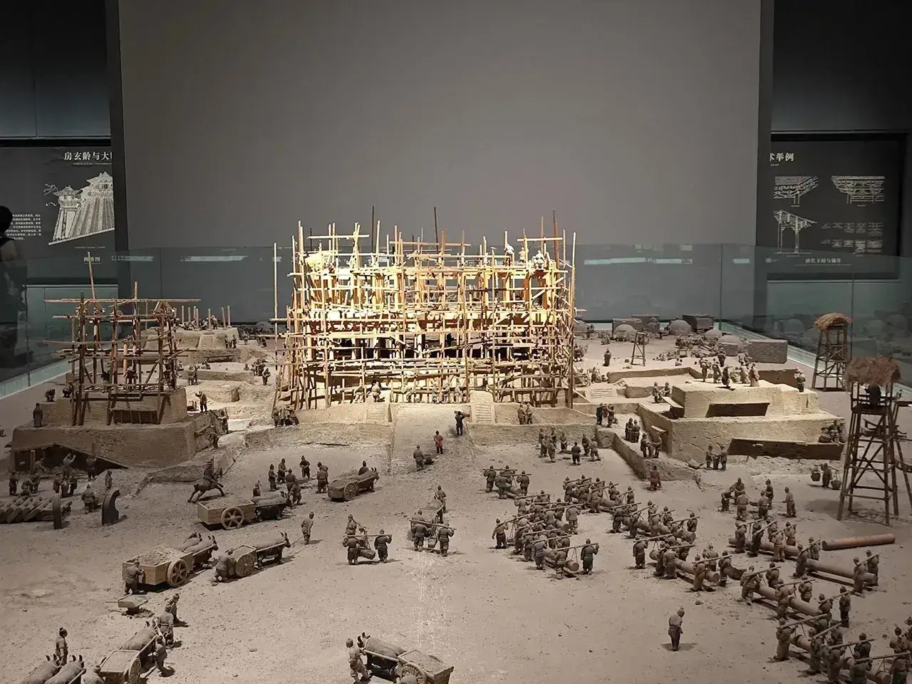
{kind=link}
{kind=link}
{kind=link}
大兴土木！
大明宫本是李世民给李渊养老所用，结果刚刚动工他老子就挂了！后面就变成了唐朝最重要的政治活动场所。到了武周时期就此定名大明宫！
{kind=link}
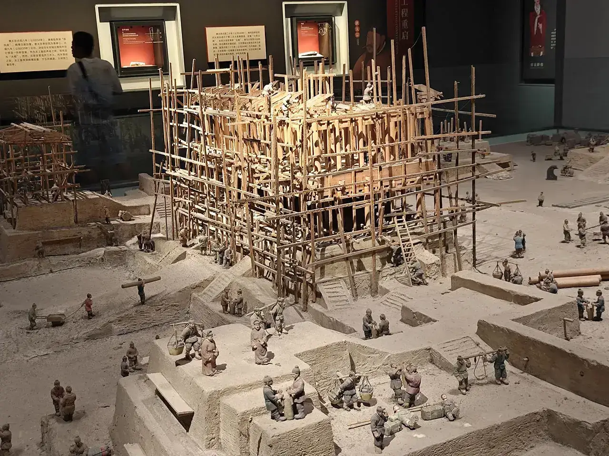
{kind=link}
{kind=link}
{kind=link}
{kind=link}
建筑部件
目前考古发掘出的一些遗址文物。
{kind=link}
盛世大唐！含元殿大朝会！
{kind=link}
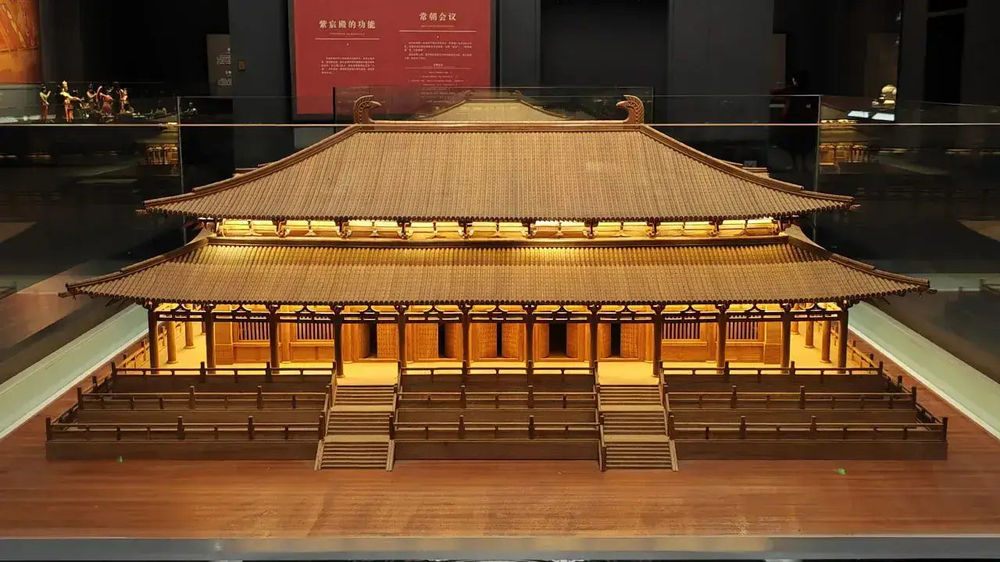
{kind=link}
{kind=link}
{kind=link}
{kind=link}
{kind=link}
{kind=link}
{kind=link}
{kind=link}
{kind=link}
陶俑系列
{kind=link}
盛世大唐周！武则天麟德殿设宴会见日本使臣。
{kind=link}
{kind=link}
打马球！
唐朝流行球类运动。
{kind=link}
《霓裳羽衣曲》为唐代大曲代表作。本名《婆罗门曲》，由天竺传入，再经玄宗增修，杨贵妃编舞。内容叙述玄宗笃信道教，向往神仙，梦中去月宫见到仙女的故事。舞者为女伎，皆道家仙姑打扮。上身着羽衣，下身穿淡色或月白色长裙，肩披霞岐，头戴步摇冠，佩戴珠翠，华丽典雅，舞姿轻柔飘逸。此曲有独舞和双人舞，亦有数百宫女共演的大型舞。全曲反映了盛唐乐舞的艺术成就，白居易曾作《霓裳羽衣舞歌》称赞其作，“干歌万舞不可数，就中最爱霓裳舞”。
由老昏君发明。
{kind=link}
{kind=link}
{kind=link}
石雕系列
{kind=link}
{kind=link}
拆拆拆！
为了保护大明宫遗址，国家整理并清理了上面的老旧建筑！
10:19 更多土堆
{kind=link}
中晚唐政局动荡，大明宫盖了又毁，毁了又改，最后朱温篡唐，大明宫彻底 GG，最后就是如今的模样。
{kind=link}
从玻璃墙中还可以想象一下当年的辉煌，对了老半天，对不上。
{kind=link}
才发现是对错建筑了😵。
{kind=link}
现在这个也对上了。
10:24 大明宫微缩模型
{kind=link}
{kind=link}
{kind=link}
{kind=link}
{kind=link}
小小的也很可爱
10:38 铁架子
{kind=link}
10:45 太液池
{kind=link}
{kind=link}
{kind=link}
看完贵妃洗澡，撤！
再往前走是太液池，拦住了去路。这个时候热蒙蛋醒了！得回去找热蒙蛋。加上实在是太晒了，就不去北边的玄武门了。
结果尝试走出去，都是围栏，找出口找了半天，东边没找到，只好从西边出去，晒死我了😵。
11:17 速回！
{kind=link}
{kind=link}
西安城墙
西安地铁其实还蛮多的，但是之前京爷当习惯了，还是觉得不够多😠！打车回民宿，￥23.35。